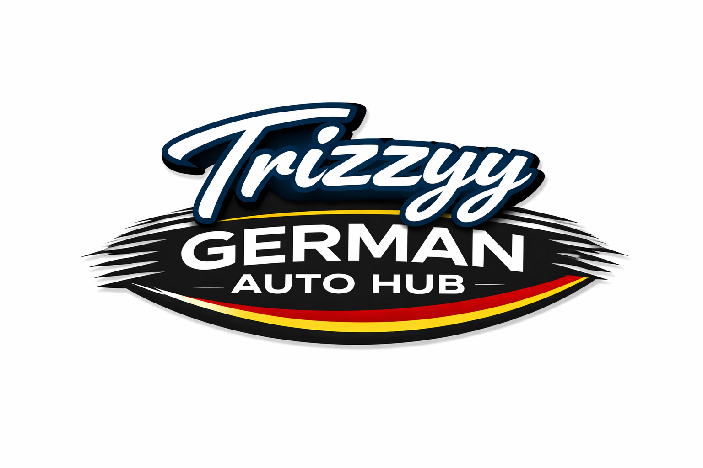

Trizzyy German Auto Hub is a modern car dealership located in Gaborone at 11556 Kgaladua Road. The dealership was established in 2026 and has quickly grown into one of the fastest growing German vehicle dealerships in the city.
Our dealership focuses mainly on Volkswagen vehicles known for their reliability, engineering excellence and modern technology.
Customers can explore models such as the Volkswagen Polo, Golf, Passat and Tiguan which are some of the most popular German vehicles available in Botswana.